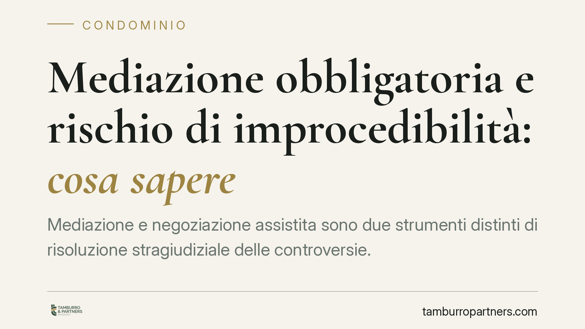

Mediazione obbligatoria e rischio di improcedibilità: cosa sapere
Mediazione e negoziazione assistita sono due strumenti distinti di risoluzione stragiudiziale delle controversie. Confonderli può costare caro: nelle materie a mediazione obbligatoria, il mancato o errato esperimento può rendere la domanda improcedibile. Vediamo il quadro normativo dopo la Riforma Cartabia e i profili pratici che interessano condomini, contraenti e chi deve impugnare una delibera assembleare.

Due strumenti diversi, non intercambiabili
È un errore ricorrente considerare mediazione e negoziazione assistita come vie alternative e sostituibili. Non lo sono.
La mediazione (D.lgs. 28/2010) è un procedimento davanti a un organismo terzo, il mediatore, che aiuta le parti a raggiungere un accordo. La negoziazione assistita (D.l. 132/2014) è invece un negoziato condotto direttamente dalle parti con l'assistenza obbligatoria dei rispettivi avvocati, senza intervento di un terzo.
Ogni strumento è previsto come condizione di procedibilità per materie diverse. Usare quello sbagliato espone al rischio concreto che il giudice dichiari la domanda improcedibile.
Inquadramento normativo
Le materie a mediazione obbligatoria sono elencate nell'art. 5 del D.lgs. 28/2010, riscritto dalla c.d. Riforma Cartabia (D.lgs. 149/2022), con effetto per i procedimenti introdotti dal 30 giugno 2023. Vi rientrano, tra le altre, le controversie in materia di condominio, diritti reali, divisione, successioni, locazione, comodato, affitto d'azienda, risarcimento da responsabilità medica e da diffamazione a mezzo stampa, contratti assicurativi, bancari e finanziari.
La negoziazione assistita è invece obbligatoria, ai sensi dell'art. 3 del D.l. 132/2014, per le domande di pagamento fino a 50.000 euro e per il risarcimento del danno da circolazione di veicoli e natanti (con alcune esclusioni).
Due elenchi separati. Chi sbaglia canale rischia di dover ricominciare, con perdita di tempo e costi.
Fungibilità: una tesi minoritaria, non un principio
Si registrano alcune pronunce di merito che, in casi specifici, hanno ritenuto assolta la condizione di procedibilità anche quando la parte aveva attivato lo strumento "sbagliato", valorizzando l'avvenuto tentativo di composizione stragiudiziale.
È però un orientamento minoritario e controverso. L'indirizzo prevalente considera i due strumenti non fungibili. Confidare sulla tesi permissiva è una scommessa: il rischio di una dichiarazione di improcedibilità resta reale.
Consigliamo di non fare affidamento su questa lettura e di individuare con esattezza, caso per caso, lo strumento richiesto dalla materia.
Delibere condominiali: il termine di 30 giorni
L'impugnazione delle delibere assembleari annullabili va proposta, a pena di decadenza, entro 30 giorni ex art. 1137 c.c. Il termine decorre dalla deliberazione, per i dissenzienti e gli astenuti presenti, e dalla comunicazione del verbale per gli assenti.
Poiché il condominio rientra tra le materie a mediazione obbligatoria, va coordinato l'art. 1137 c.c. con l'art. 5, comma 6, del D.lgs. 28/2010: la comunicazione della domanda di mediazione produce, sulla decadenza, gli stessi effetti della domanda giudiziale. In altre parole, impedisce la decadenza dal termine di 30 giorni (e sospende la prescrizione).
Non si tratta quindi di una generica "sospensione" con successiva ripresa del conteggio: la corretta e tempestiva presentazione della domanda di mediazione salvaguarda il diritto di impugnare. Un errore su questo passaggio può rendere definitiva una delibera che si voleva contestare.
Costi della negoziazione assistita
I costi sostenuti per la negoziazione assistita non godono di una "rimborsabilità automatica". Seguono, in linea di principio, il regime generale delle spese di lite ex art. 91 c.p.c.: è il giudice a liquidarle in base all'esito del giudizio.
L'art. 13 del D.l. 132/2014 disciplina specificamente le conseguenze in materia di spese e responsabilità in caso di rifiuto ingiustificato della convenzione o di mancata partecipazione. La regolazione economica va quindi valutata nel contesto processuale complessivo, non presunta come acquisita.
Cosa fare in concreto
- Verifica la materia prima di agire: individua se la controversia richiede mediazione (art. 5 D.lgs. 28/2010) o negoziazione assistita (art. 3 D.l. 132/2014). Non presumere la fungibilità.
- Rispetta i termini di decadenza: per le delibere condominiali attiva la domanda di mediazione entro i 30 giorni dell'art. 1137 c.c., così da impedire la decadenza ex art. 5, comma 6.
- Documenta l'invito e la partecipazione: conserva prova della corretta convocazione e del comportamento delle parti, rilevante ai fini delle spese.
- Valuta la mediazione telematica quando ammessa: è una modalità valida, purché rispetti i requisiti di identificazione e di formazione del verbale.
- Fatti assistere da subito: la scelta dello strumento e la gestione dei termini incidono sull'esito. Un errore iniziale è spesso irrecuperabile.
Ogni condominio ha una storia a sé.
Se gestisci un'amministrazione e vuoi un confronto su una specifica questione condominiale, scrivi allo studio. Ti rispondiamo entro un giorno lavorativo.